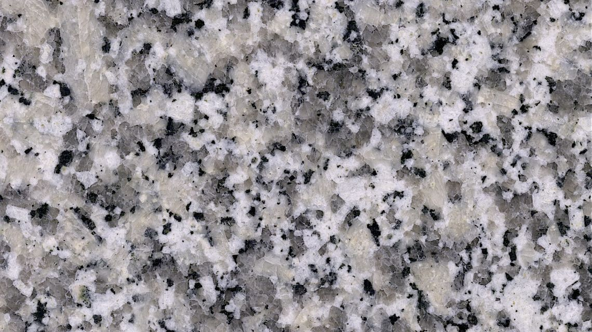
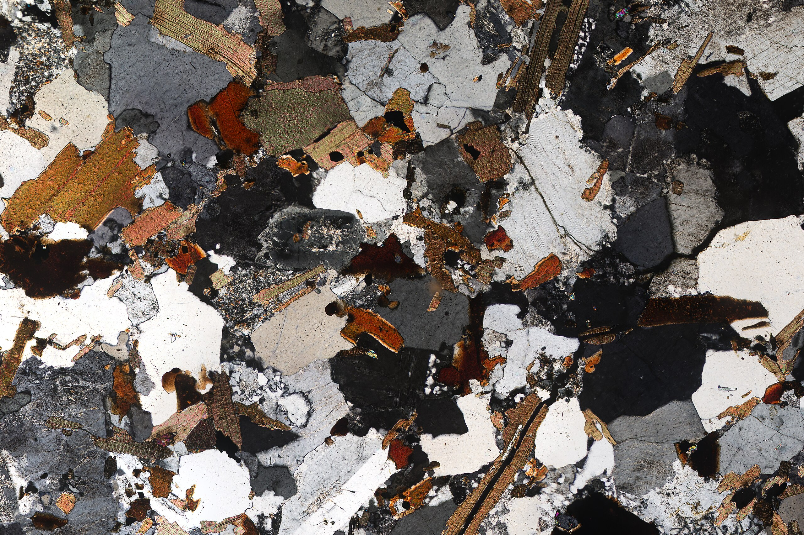

Granite (/ˈɡrænɪt/ GRAN-it) is a coarse-grained (phaneritic) intrusive igneous rock composed mostly of quartz, alkali feldspar, and plagioclase. It forms from magma with a high content of silica and alkali metal oxides that slowly cools and solidifies underground. It is common in the continental crust of Earth, where it is found in igneous intrusions. These range in size from dikes only a few centimeters across to batholiths exposed over hundreds of square kilometers.

Granite is typical of a larger family of granitic rocks, or granitoids, that are composed mostly of coarse-grained quartz and feldspars in varying proportions. These rocks are classified by the relative percentages of quartz, alkali feldspar, and plagioclase (the QAPF classification), with true granite representing granitic rocks rich in quartz and alkali feldspar. Most granitic rocks also contain mica or amphibole minerals, though a few (known as leucogranites) contain almost no dark minerals.

Granitic rocks are classified according to the QAPF diagram for coarse grained plutonic rocks and are named according to the percentage of quartz, alkali feldspar (orthoclase, sanidine, or microcline) and plagioclase feldspar on the A-Q-P half of the diagram. True granite (according to modern petrologic convention) contains between 20% and 60% quartz by volume, with 35% to 90% of the total feldspar consisting of alkali feldspar. Granitic rocks poorer in quartz are classified as syenites or monzonites, while granitic rocks dominated by plagioclase are classified as granodiorites or tonalites. Granitic rocks with over 90% alkali feldspar are classified as alkali feldspar granites. Granitic rock with more than 60% quartz, which is uncommon, is classified simply as quartz-rich granitoid or, if composed almost entirely of quartz, as quartzolite.[5][6][7]